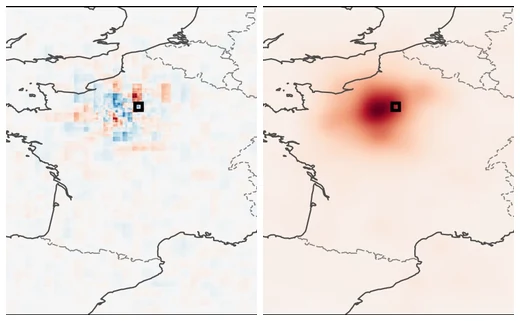

Explanation of Dynamic Physical Field Predictions using WassersteinGrad: Application to Autoregressive Weather Forecasting
Younes Essafouri, Laure Raynaud, Luciano Drozda, Laurent Risser
arXiv preprint · under review
Perturbing the input of a neural weather model does not make its gradient explanation noisier — it makes it move. We show that stochastic input perturbations geometrically displace attribution maps on dynamic physical fields, an effect that compounds under autoregressive rollout, and replace SmoothGrad’s pointwise averaging with an entropic Wasserstein barycenter that recovers a spatially coherent geometric consensus.
@article{essafouri2026wassersteingrad,
title = {Explanation of Dynamic Physical Field Predictions using
WassersteinGrad: Application to Autoregressive Weather Forecasting},
author = {Essafouri, Younes and Raynaud, Laure and
Drozda, Luciano and Risser, Laurent},
journal = {arXiv preprint arXiv:2604.22580},
year = {2026}
}